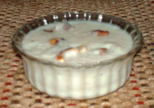

KHIRI

DESCRIPTION
Khiri, commonly known as Kheer in different regions of India, is a popular Indian dessert. In Odisha, it is made in a slightly different way.
Khiri is associated with the famous Jagannath temple of Puri, where it had been served to the deities as prasad for centuries together. It's an
indicator that Khiri existed in Odisha since the time the Jagannath temple was built in the 12th century.
Ingredients
- Raw rice - 200 g
- Sugar - 400 g
- Milk - 1 litre
- Condensed milk
- Cashew nut - 25 g
- Edible raisins - 25 g
- Bay leaves - 4
- Cardamom - 5
- Salt
Steps
- Put the rice, bay leaves, salt and water in a pressure cooker.
- Boil the contents of the pressure cooker till the first whistle is heard.
- After the steam is fully released from the cooker, remove the bay leaves.
- Boil milk in another container. Put the boiled milk, along with one and a half tablespoon of condensed milk, into the pressure cooker.
- Add sugar into the cooker and stir the contents well.
- Put the pressure cooker on medium flame without the lid on. Stir the contents at regular intervals.
- As the contents start boiling, lower the flame and boil the contents for another 15 minutes.
- Continue stirring the contents while boiling.
- At this stage, add the raisins, cashewnuts (broken into smaller pieces) and powdered cardamom.
- Switch off the flame when contents turn semi-thick.
- Let the contents cool down to room temperature.
- Khiri is ready to be served.
Go to: